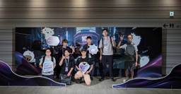

freee Developers Hub
https://developers.freee.co.jp/
フリー株式会社の開発者（エンジニア, デザイナー,プロダクトマネージャー, etc...）によるブログです
フィード

DroidKaigi2025に参加してきました！
freee Developers Hub
集合写真 こんにちは、24卒モバイルエンジニアのhamatatsuと25卒モバイルエンジニアのinatakuです！ 9/10〜9/12に開催されたDroidKaigi 2025に参加してきました！ 会場には様々なブースがあり、クイズを楽しんだり技術的な質問をしたりと、参加者同士の交流が盛んに行われていました。 会場の様子 今年は特に「AI/LLMのアプリへの統合」と「Kotlin Multiplatform (KMP) の実践的導入」に関するセッションが目立ち、Android開発の次の大きな波を強く感じるカンファレンスでした。 1日目ワークショップ ワークショップの様子 今年はJetBrain…
2日前

熱狂と即決を引き出す！〜AIとつくる探索フェーズのプロダクトデザイン 〜
freee Developers Hub
【自己紹介】 スモールプロダクト戦略チーム エクスペリエンスデザイナー niko 2021年入社。お菓子メーカーのマーケターからエクスペリエンスデザイナー（XD）として入社。新規事業や新領域の探索〜ソリューション作成・提示まで担当。（notプロダクトデザイン出身者） スモールプロダクト戦略チーム プロダクトマネージャー mayuki 2017年入社。カスタマーサポートに5年間従事、現在はプロダクトマネージャーとして会計プロダクトのweb/mobile開発を担当。 「探索」フェーズのプロダクト開発、どうやって進めよう？ こんにちは、私達はfreeeのプロダクト開発チームで企画を担当しているnik…
9日前
RubyWorld Conference 2025 に参加してきました！
freee Developers Hub
RubyWorld Conference 2025 参加レポート こんにちは！freeeでアプリケーションエンジニアをしているおっそーです。 このたび2025年11月6日・7日の2日間、島根県松江市の「くにびきメッセ」で開催された「RubyWorld Conference 2025」に参加してきました！本記事では、カンファレンスの雰囲気や印象的だったセッションについてレポートします。 freeeからの参加者4名の集合写真 RubyWorld Conference とは RubyWorld Conference は、Rubyの生みの親であるまつもとゆきひろ氏の地元・島根県で開催される国際的なRu…
10日前
ユニットテストに時限爆弾を作らないためのベストプラクティス
freee Developers Hub
要約 時限爆弾的なテストとは、テスト内で扱う日時（レコードのregistered_atなどの属性値やスタブの値）にハードコードされた日時文字列（ '2024-07-15' など）を使うことで、時間経過により失敗するようになるテストのこと。 基本原則: ❌ '2024-07-15' のようなハードコードされた日時文字列を書かない（エッジケース除く） ✅ 通常のテスト: Time.current、1.week.ago など テスト実行時を基準とした相対日時 を使う ✅ 日時依存ロジック: travel_to で テスト実行時の「今日」を特定の日付に固定 し、テストデータの日時もTime.zone.…
10日前
2025/11/14 Qiita Bash 「キミたちはClaude Codeをどう使いこなす？」 LT 登壇資料
freee Developers Hub
2025年11月14日に行われた、キミたちはClaude Codeをどう使いこなす？のLT登壇資料です。 speakerdeck.com
11日前
2025/11/11 AWSブログにて対談記事 "「その AI の精度が 1% 上がったとき、顧客価値は？」 freee が語る、価値創出論と AI ネイティブ組織への変革" が公開されました
freee Developers Hub
弊社のAIプロダクトマネージャーの木佐森と、AWSソリューションアーキテクトの福本氏との対談記事が公開されました。 「AIネイティブ」を実現する組織づくりと取り組みについて、ビジョン・組織・成功基準について語っています。また、AWS との協業として、Amazon Bedrock を選定した背景について説明しています。 記事はこちらです。 ぜひご確認ください! aws.amazon.com
17日前
2025/11/04 Builders Flash にて "AWS と LiteLLM で実現する、セキュアで柔軟な AI エージェント基盤のアーキテクチャ" を公開しました
freee Developers Hub
弊社のAI駆動開発チームの中山が、Amazon Web Service (AWS) のブログメディアである、Builders Flash にて記事を寄稿しました。 AIエージェントを安全かつ効率的に処理するプロキシ基盤を、LiteLLM を通じて利用するアーキテクチャを紹介しております。 記事はこちらです。 aws.amazon.com
24日前
dbt Cloudを全機能検証してわかったこと
freee Developers Hub
アナリティクスエンジニアの okoshi です。 私は、2024年3月まではWebエンジニアをしていましたが、ビッグデータに興味を持ち、データエンジニアを経験した後にアナリティクスエンジニアに転向しました。 新しいSaaSを導入するときにきになるのは、自分たちが期待する結果が本当に得られるか、そして日々の運用の中で無理なく使い続けられるかという点です。 dbt Cloudについても、マニュアルや紹介資料を読むだけではみえにくい部分、それは実際の使い勝手や機能の挙動、契約プランの適性などを確かめておきたいと考えました。 そこで今回は、dbt Cloudの全機能を一通り検証し、使える機能・運用上注…
1ヶ月前
【染み出し】関わるものごとを広げ、なんとかする【意思決定】
freee Developers Hub
こんにちは。freee でエンジニアリングマネージャーをしている sentokun と申します。 最近仕事への向き合い方やリーダーシップについて人と話す機会がよくあるので、意思決定をキーにして考えをアウトプットしようと思います。 3行サマリ ものごとを前に進めるのって大事だよね ものごとって実は広いし、関わり方を広げられることが重要だよね そんなものごとを前に進める行為、それが意思決定だよね 想定読者 リーダーになろうとしている、あるいはなりたい人 特にその境で壁を感じている人 リーダーと自分は別のものと感じている人 オーナーシップや意思決定が遠いものに感じている人 総じて、役割の壁を感じるこ…
1ヶ月前
2025/9/12 JaSST'25 Niigata ソフトウェアテストシンポジウム 2025 登壇資料
freee Developers Hub
JaSST'25 Niigataでの登壇の様子 2025年9月12日に行われた、JaSST'25 Niigata ソフトウェアテストシンポジウム 2025 での登壇資料です。 speakerdeck.com
2ヶ月前
2025/9/10 Recursion「AI時代を生き抜くエンジニアキャリアの築き方」登壇資料
freee Developers Hub
2025年9月10日に行われた、AI時代を生き抜くエンジニアキャリアの築き方の登壇資料です。 speakerdeck.com
2ヶ月前
11/30 (日)「freee 技術の日 2025」開催！
freee Developers Hub
freee で freee会計のエンジニア兼 DevRel をしているけむりだま (@_kemuridama) です。 今年も freee 主催のテックカンファレンス「freee 技術の日 2025」を 2025/11/30 (日) にフリー株式会社本社と YouTube Live でハイブリッドで開催します🎉 「freee 技術の日」とは 「freee 技術の日」は 2023 年から開催している freee のテックカンファレンスです。昨年はオフライン・オンライン合わせて 1,000 人を超える方に参加登録をしていただきました。 昨年の Keynote の様子 テックカンファレンスと聞くと一…
2ヶ月前
iOSDC 2024で学んだ複雑なアプリ開発への向き合い方とAI駆動開発の実践
freee Developers Hub
昨年2024年9月に開催された「iOSDC Japan 2024」に参加しました。iOS開発者にとって毎年楽しみにしている一大イベントです。振り返りがだいぶ遅れてしまいましたが、このタイミングで昨年の学びをブログとして振り返ります。約1年経った今でもiOSDCで得た学びは日々の開発に活きています。 この記事では心に残ったセッションや会場の雰囲気、そして来たるiOSDC Japan 2025への意気込みを語ります。 この記事で伝えたいこと iOSDC 2024で特に印象に残ったセッションの学びをベースに、現在社内で導入しているAI駆動開発の事例を交えながら振り返ります。 この記事が、モバイルアプ…
3ヶ月前
AI駆動開発へ。freee は開発環境をどう進化させているか？- 前編
freee Developers Hub
こんにちは! freee AI駆動開発 (AI-Driven Development) チームのジェスンです。 社内では jason というあだなを使っているのですが、「エンジニアだから JSON にしたんですか?」 と言われて困っています 😆 はじめに AI Agent Cline、Roo Code、Goose Claude Code Devin MCP Server 開発背景 ・ 技術選定 どう運用しているのか？ 運用の課題 最後に はじめに 本記事は、5月頃に公開した下記の記事に続き、導入後の freee における AI駆動開発環境の進化や、最近の具体的な取り組みをご紹介するものです。 …
3ヶ月前
新卒エンジニアが研修で AI Agent を全力で使ってみた
freee Developers Hub
初めまして！2025 年 4 月に新卒で freee に入社した massu です！ この記事では、freee の新卒研修において AI Agent「Cline」をどのように活用したか、その効果と課題について技術的観点から詳しく紹介します。 新卒研修の概要 2025 年の freee の新卒研修は 3 ヶ月間で、以下のように前半・後半の 2 段階構成で行われました。 この間に開発の基礎や成長マインドを身に着け、本配属後にスムーズに業務を行えるような状態を目指します。 前半研修 AI 禁止！Web ブラウザの開発: 4 週間 仮配属: 2 週間 後半研修 AI 全力活用！テーマ別のプロダクト開発…
3ヶ月前
エンジニアを目指す学生の皆さんを「Kaigi on Rails 2025」にご招待します
freee Developers Hub
こんにちは、エンジニア新卒採用チームのyopi(@M68Mp)です！ この度、freeeは「Kaigi on Rails 2025」のスカラシップスポンサーになりました。 Kaigi on Rails 学生スカラシップとして、「Kaigi on Rails 2025」に参加したい学生の方の参加に係る費用をサポートいたしますので、詳しくは下記をご覧頂き奮ってご応募ください！ Kaigi on Railsとは Kaigi on Rails公式Webサイトより引用： Kaigi on Railsのコアコンセプトは 「初学者から上級者までが楽しめるWeb系の技術カンファレンス」 です。Kaigi on…
3ヶ月前
「AIに仕事を奪われる？」新卒エンジニアがfreeeで見つけた答え
freee Developers Hub
初めまして！ 2025 年 4 月に 入社した新卒エンジニアのmassuです。 6 月に研修を終えて、いよいよ現場配属となり、今は freee 人事労務の給与計算機能を AI 活用して開発を進めています。 freee では Cline を全社展開しており、Claude Code の順次導入も進んでいるため、当たり前のように日々 AI 活用を推進、また趣味としても興味関心を持つ freeers（freee で働く人）が多くいます。 私もその一人です。 先日はアドベントカレンダー企画の一環で AI 全任せでゲームを作ってみたので、よければこちらもご覧ください。 developers.freee.c…
3ヶ月前
真夏の自由研究 - Agentic Coding まずは体験してみることが大事
freee Developers Hub
真夏の自由研究〜AIを使って雑にアプリを作ろう！ の最終日を承った him0 です。最近は技術リードをしたり、プロダクトの立ち上げをしたりしています。今回この雑アプリを作るという企画の提案した人だったりもします。本日は最終日らしく、この企画の意図と自分が作った雑アプリを紹介して企画の結びとしようと思います。 Agentic Coding と現場の声 2025年、AI 主導のコード生成が強くフィーチャーされているのは語るまでも無い状況です。このスタイル自体が生まれたばかりで言葉の定義が難しいのですが、この記事では Agentic Coding と呼称したいと思います。 この Agentic Co…
3ヶ月前
freeeアクセシビリティー・ガイドライン Ver. 202508.0を公開しました
freee Developers Hub
こんにちは、freeeのアクセシビリティー・ガイドラインおじさんの中根です。 最近、日中に外出する度に、「東京の日差しってこんなに強かったっけ？？」と感じます。実際にちゃんと比較してどうなのかは知りませんが、いずれにしても熱中症には気を付けましょう。 さて、1年ぶりに例によってfreeeアクセシビリティー・ガイドラインの更新情報です。 ここのところ、以前よりはだいぶリリース頻度が減って、前回こちらで更新情報を掲載した後のリリースは、今回が4度目です。 ガイドラインやチェック内容の変更もあるのですが、今回は以下3点について紹介します。 対象が「デザイン」のアクセシビリティー・チェック・リストの見…
3ヶ月前
OIDF-J 第2期 人材育成WG 上半期の参加レポート
freee Developers Hub
はじめまして、スモール創業開発部のかるたです。2025年からfreeeが参加しているデジタルアイデンティティ人材育成ワーキンググループの中間報告会までの活動について紹介させてもらいます。 デジタルアイデンティティ人材育成ワーキンググループとは？ デジタルアイデンティティに関する動向・情報などを初学者でも取り付きやすい形で整理・発信することで、自他ともに理解の推進を図り、世の中のIDを関連ビジネスの促進に貢献することをねらったワーキンググループ(以下WG)になります。 WGは昨年2024年から始まり今年も募集がはじまり、freeeからはてらら、ハトン、かるたの3人が参加し、 会員企業の方たちとも…
3ヶ月前
Mac のキーボードを楽にカスタムするアプリを作りたかった
freee Developers Hub
真夏の自由研究〜AIを使って雑にアプリを作ろう！〜 9日目は shiro が担当します。 こんにちは。2025年4月に中途入社し、人事労務を開発しています、shiro です。 今回は私が週末に個人開発で作っているアプリを紹介いたします。 解決したかったこと 私は普段は自作キーボードを使用して、かつキーの配置をゴリゴリにカスタマイズして使っています。 一般的なものと比較して、配置が変わっていないアルファベットは「Q」と「A」の 2 つだけです。 ただ、会議などがあってオフィス内を移動するとき、常に外付けのキーボードを携行するのは現実的ではありません。 この課題を Mac で解決するには、『Kar…
3ヶ月前
MySQLのロック継承が引き起こしたsupremumロックによるDB障害事例
freee Developers Hub
こんにちは、DBREの周東（X: @dev_kngnr）です。 DBRE では、freee の全プロダクトが利用するデータストア層の信頼性向上をミッションとしています。その活動の一環としてDB障害の原因の調査や、再発防止策の検討を行っています。この記事では、freee のとあるサービスで実際に起こった DB 障害と、その引き金となった MySQL のロック継承の仕組みについて紹介します。 概要 今回紹介するDB障害では、Aurora MySQL への接続失敗が頻発し、最終的には Web を開くこともできない状態にまで発展しました。原因を調査したところ、ROLLBACK TO SAVEPOINT…
3ヶ月前
ターミナルエミュレータを自作してみた
freee Developers Hub
真夏の自由研究〜AIを使って雑にアプリを作ろう！〜 8日目は jaxx が担当します。子どものリアル夏休みの工作ではアイデアを Gemini に壁打ち相手にしてもらって作り方やイメージ図を作ってもらいました。アイデアはあるけど実現方法に自信が持てない子どもにとってはAIは強い味方ですね。 今回雑アプリを作ろうということで、今回はターミナルエミュレータを自作してみて、ちょっとした機能を追加してみました。 自作 PC といえば RGB ライティング 趣味が自作PCなのですが、自作PCといえば何を思い浮かべるでしょうか。 CPUクーラーの選定 グラフィックボードの性能比較 電源容量の計算 ケースの拡…
3ヶ月前
AIエージェントに丸投げして雑ランキングAPIを構築
freee Developers Hub
真夏の自由研究〜AIを使って雑にアプリを作ろう！〜 7日目はyag13sが担当します。 こんにちは、yag13s と申します。普段はfreee会計の債務領域に関わる機能の開発をしています。 みなさんは昨日のmassuさんの記事をご覧になりましたでしょうか。 AI全任せで作る！某スイカゲームのパロディ制作秘話 - freee Developers Hub 題材になったe-mohaさんはチームメンバーということもあり、私もアレでよく遊んでいました。 例のゲームはブラウザで遊べるゲームであり、スコアも出る。じゃあ後はランキングだけだな。と言うことでAPIで利用できるランキングサーバーを作らせることに…
3ヶ月前
AI全任せで作る！某スイカゲームのパロディ制作秘話
freee Developers Hub
真夏の自由研究〜AIを使って雑にアプリを作ろう！〜 6日目はmassuが担当します。 こんにちは、2025年4月に新卒で入社しました、massuです！ 6月末まで行っていた新卒研修を無事に終え、AI エージェントの使い方にも慣れたところで個人でClaude Maxに課金してみました。 今回は、「AIに全部任せたらどこまでできるのか？」という素朴な疑問から始まった、ちょっと変わったゲーム開発の話をお届けします。 コーディング標準もアーキテクチャ設計も一切なし、人間は指示を出すだけ。 そんなシンプルなルールで作ったブラウザゲームの制作過程と、その過程で見えてきたAIの強みと課題について共有します。…
3ヶ月前
2025/8/5～8/6 Google Cloud Next Tokyo 2025「freee が目指す 生成 AI 時代に向けた次世代 データ プラットフォームと ガバナンスとは」登壇資料
freee Developers Hub
2025年8月5日～6日に行われた、 Google Cloud Next Tokyo 2025での登壇資料です。 speakerdeck.com セッション動画をご覧になるには、 Google Cloudのログインが必要です。
3ヶ月前
日誌などに利用できる体調の表現などを行う Chrome Extension + LLM成果物を公開するときのライセンスはどうするか
freee Developers Hub
真夏の自由研究〜AIを使って雑にアプリを作ろう！〜 5日目にございます。freee販売開発のbucyou(ぶちょー) がお送りします。 関西で一緒に働く kochan からこの企画を聞いた時に、確かに最近雑にアプリは作ってないなーというのを思い返したのでした。製品のためにちょっとした便利ツールなどを作ったりはしているので、今回はむしろ全くの白紙な状態で作りたいものを作るぞ! ということで、どうしようかな。などと思ったのでした。 そんな中、業務の日常を振り返ってみると、チームでやっているアサカイのことを思い出したのでした。特に私たちのチームは沖縄、関西と横断しており、一部の人がオフィスに集まって…
3ヶ月前
童謡の歌詞で神経衰弱ゲームを作ってみた
freee Developers Hub
真夏の自由研究〜AIを使って雑にアプリを作ろう！〜 4日目は、請求書プロダクトの開発をしているyoneが担当します！ AIアプリとして私は、多くの人が知っている童謡の歌詞で神経衰弱ができるゲームを作りました。 神経衰弱ゲームの画面 神経衰弱でペアをめくった時の画面 作成過程について AI雑アプリアドベントカレンダーの大まかな方針として AIを活用してアプリをシュッと作る 規模としてはHTMLファイルに直接CSSとJSを書いてGitHub Pagesなどにシュッと上げられるくらい という2つの軸がありました。 コーディングだけでなくアイディア出しからAIに壁打ちしてもらい、人間は「アイディアがと…
3ヶ月前
画像にモザイクをかけるだけの雑アプリ
freee Developers Hub
真夏の自由研究〜AIを使って雑にアプリを作ろう！〜 3日目はrolが担当します。 普段はfreee人事労務の開発をしております、rolと申します。 社内外に出す記事を書く際、センシティブな情報にモザイクをかけたくなった経験はありませんか？ GIMP等の無料のソフトを使えばモザイク処理ができますが、画像一枚にシュッとモザイクをかけたいだけなのに高機能なデスクトップアプリをインストールするのは大袈裟だと感じます。 MacやWindowsに標準で搭載されている画像アプリでもマスクをかけることはできますが、四角い図形で隠すくらいしかできないのでかっこよくならないです。 次に検討するのがブラウザ上で完結…
3ヶ月前